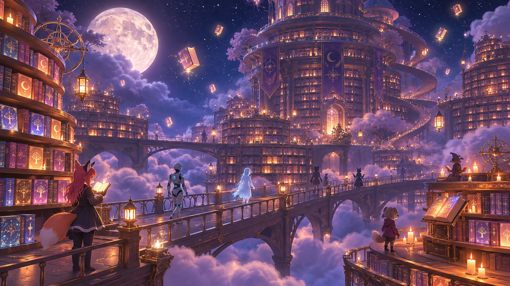
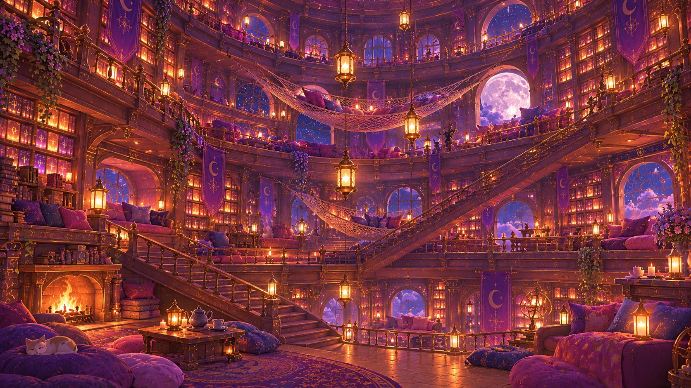
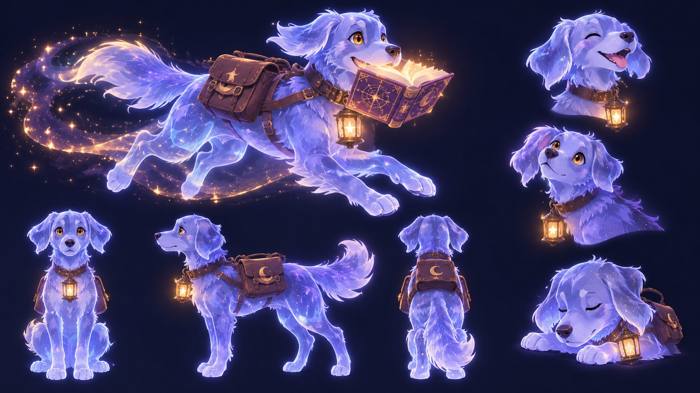
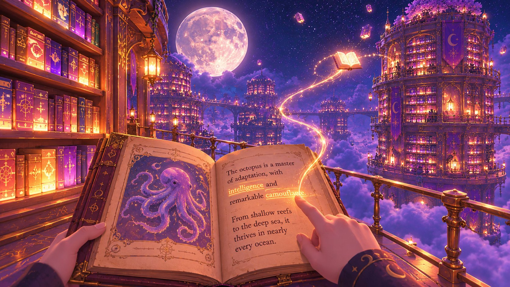
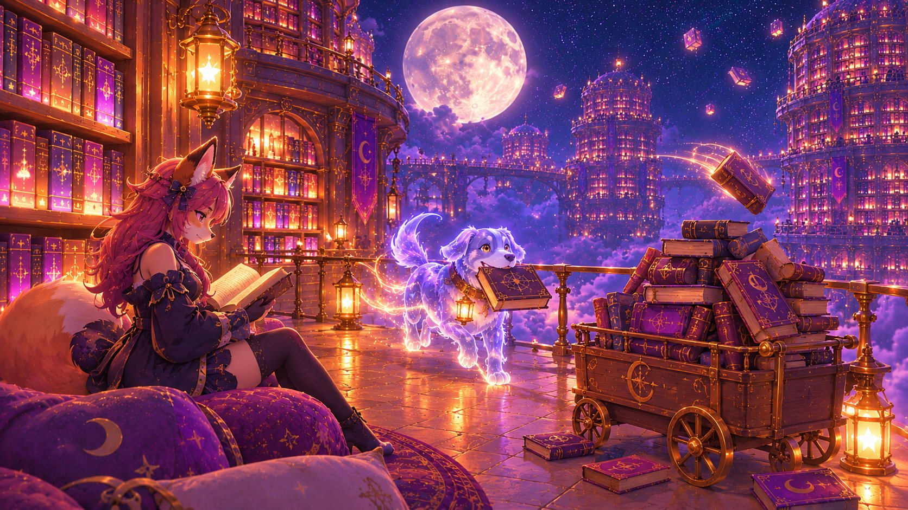
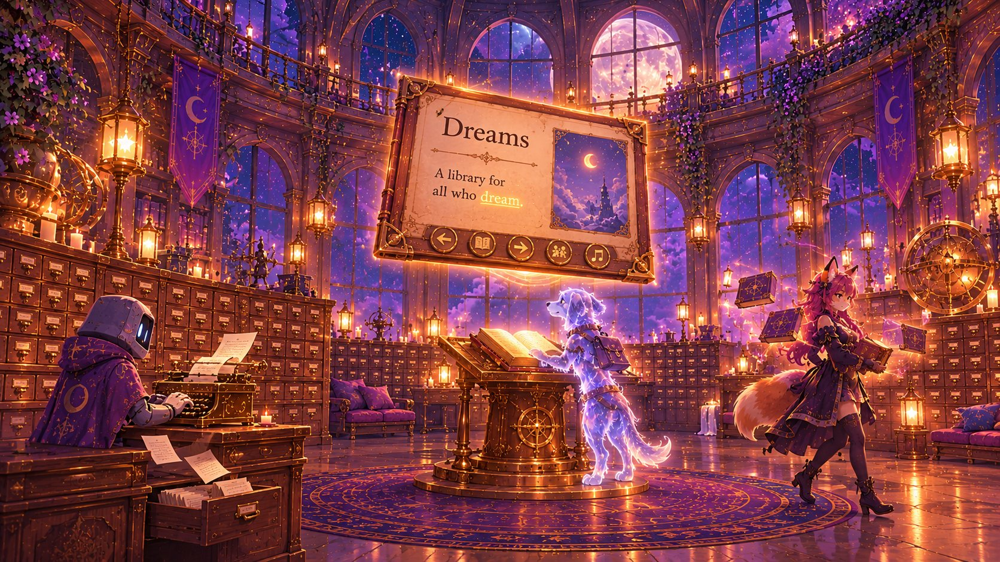
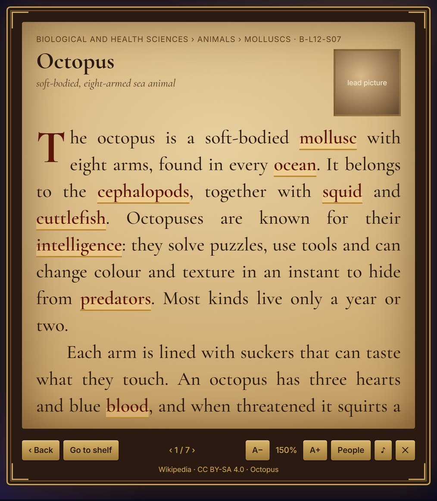

A VRChat world in design · Doghouse Devs
The Midnight Archive
- What
- A cloud library at night where every book is a Wikipedia article
- Towers
- 11 topics, one tower each; People is three sub-towers
- Status
- In design · not released
- By
- Doghouse Devs
Fall down a rabbit hole
The Midnight Archive is a library floating on clouds at night, in VRChat. Every book on its shelves is a real, readable Wikipedia article.
Pull a book off a shelf and read it in your hands. Its gold words are links: touch one and that book is brought to you from whatever tower it lives in. Back takes you through everything you looked at, like a browser.
The books line the outside of tall towers on floating isles, joined by lantern-lit bridges. Inside, each tower is a cozy place to lie around and talk, themed by its topic.
This page is the blueprint: concept art, a map you can click, and a cut through each tower. Nothing here is final.
- SettledDecided.
- PrototypeWorking now in a test world.
- ProposalA suggestion, not settled.
- IdeaSaved for later.
Concept art for mood, not final art · made with ChatGPT













Archipelago plan
Towers Wikipedia's top topics · one tower each
Floors
Article search covers the v1 collection: Wikipedia's ~50,000 Vital Articles, in their shelf order. Some Wikipedia lists share a floor here: Basics and technical geography sits on Physical geography, Regions and countries is the Countries floor, both Arts lists share the Arts floor, and all six Technology lists share the Technology floor.
Tower section
Inside the towers Settled
The books are on the outside, so the inside of every tower is free for lying around, cuddling and talking, with a theme from its topic.
- In every tower Proposal: window seats built into the back of the shelf wall, where the books glow through like stained glass; stairs crossing the open middle between floors; hammock nets strung across it; a slide down and a page updraft up; a pillow nest on top, under glass.
- Themes Proposal: People, a portrait parlour. History, a hearth hall. Geography, a map room with a glowing floor map. Arts, a studio loft with a small stage. Philosophy and religion, a quiet pool. Everyday life, a kitchen hearth. Society, a talking pit. Biology and health, a greenhouse of moss beds and fern hammocks. Physical sciences, a planetarium. Technology, a clockwork den. Mathematics, geometry steps.
Pick a tower above to see its theme. One shared set of furniture with a few special pieces per tower keeps the world light enough for Quest.
Reading from real books Proposal
Nobody reads from floating screens. You read from the books themselves; the one floating page in the world stands on a lectern in the main hall.
- The book in your hands. Grab or click a book on a shelf and it opens in your hands. Turn the page by its corner. Others see which book you hold. Proposal Try the mock-up.
- Gold words are the links. No list of link buttons: the words in the text are the buttons. Point at one to see where it goes. Settled Touch it and that book is brought to you from its tower; the trip hides the few seconds it takes to load. Proposal Try the mock-up.
- Your books follow you. Each visitor picks a style: a spirit dog or paper helpers who fetch your books and toss the finished ones onto a growing book cart, a cart that rolls along by itself, or a cloud of floating books. The pile is your visit, and Back hands you the book before. Proposal
- Lecterns in the towers. Set a book on a lectern in a cozy nook and it opens big for everyone sitting there. Anyone can turn the page. Proposal
- The main hall. A big lectern in the middle and a ring of smaller ones around it, every one shared with everybody in the instance. A small card catalog beside each lectern finds a book and fetches it straight onto that lectern. Proposal
- Presenter mode. In the room that was going to be the Lecture Hall: one person presents a book from a lectern on a low stage. The big page behind them follows for the audience, with highlights, and the presenter can hand over. Proposal
- The card catalog. Type a title on a brass typewriter; the results pop out of a drawer as index cards. Proposal Try the mock-up.
- Long books unfold. A long article's sections fan out around you as floating pages; pull one close to read it. Proposal Try the mock-up.

Pages are in a Brass & Vellum style; lecterns use the warm Candlelit page. Settled A− / A+ sets the text size. Settled See the page styles.
Games in the academy Settled planned, not built yet
The academy at the centre of the archipelago is where the games live. Switch the map to Academy to see the rooms.
- Wiki Race in the Race Hall. Everyone gets the same start book and target book. Only the links work, no search. During a race a glowing trail draws your route (it only appears in races), and at the end everyone sees each other's paths. Every hop takes the same few seconds to load for everyone. The first to reach the target wins, and a second prize goes to the shortest route (fewest links), which can be the same player.
- Daily Race. One race a day for every visitor, picked ahead of time from the real link map of the shelves, so it is always solvable, with a par.
- Trivia Room. Proposal No lobby and no typing: rounds run nonstop, and you answer by standing somewhere or grabbing something, so anyone can drop in or just watch. The Scales: two books; stand on the side you think more people read, the crowd tips a big brass scale, then the real numbers show. Where does it live?: a book's description floats over a floor map of the archive; stand on its tower. Slow reveal: a book's first lines appear word by word with the title hidden (or its picture zooms out); step onto one of four titles, and earlier is worth more. Odd one out: five books circle a book and four of them link to it; grab the one that doesn't. Errand: everyone gets the same shelf slip; fly out, pull that book from its real shelf and bring it back first. Streaks and a scoreboard for the instance. All made from Wikipedia's own data, no AI-written questions.
Inspired by The Wiki Game. Races start and finish in the Games Hall in the middle, with a scoreboard for the instance.
How exploring works Prototype
- Open a book and read the article.
- Links to other books are the gold words in the text. Point at one to see where it goes.
- Press one. That book flies off its shelf to you and opens. The flight covers the few seconds it takes to load.
- Back returns through everything you looked at, like a browser. (The glowing trail of your path only appears during races.)
- Title search finds any book in the archive. A shelf lights up when you stand next to it or click it; grab or click a book to open it.
This already works in a plain grey test world. The route on the map above is a made-up example of a race.
What's on the shelves
- Books
- The ~500,000 most-read English Wikipedia articles. Settled The test world starts with Wikipedia's ~50,000 Vital Articles, a list editors chose to cover all knowledge. Prototype
- Towers
- One per top topic, 11 in all (People is built as three sub-towers): People, History, Geography, Arts, Philosophy and religion, Everyday life, Society and social sciences, Biological and health sciences, Physical sciences, Technology, Mathematics.
- Floors
- One floor per sub-list, so related books stand side by side.
- Licence
- Wikipedia text is CC BY-SA 4.0. Each book shows a short source line, and one QR code leads to the full credits.
A light world Prototype
The world file holds only the buildings. A book's text streams in from the web when someone opens it, so the download stays tiny: the test world, with the address of every book baked in, is under 1 MB.
VRChat loads about one book every five seconds per visitor. Animations, like the flying book, cover the wait, so something is always moving.
Pictures in the books are an extra for visitors who turn on "Allow Untrusted URLs". Everyone else still gets every book's text. Settled
Later layers part of the vision, not built yet
- Picture walls. Public-domain photos and maps as an extra for visitors with untrusted URLs on. Proposal
- Narration. Books read aloud, either by stitching together recorded words or by streaming real recordings. Idea
Look and build
- The look follows the concept art at the top: a cloud library at night, lantern-lit bridges, glowing books drifting up.
- Books on the towers' outside walls, cozy insides. Settled
- You read from books, not floating screens; the one floating page is on the main hall lectern. Proposal Pages in a Brass & Vellum style, Candlelit on the lecterns. Settled
- People, the biggest topic, is one tower built as three sub-towers on a shared plaza, joined by sky bridges: Arts and entertainment; Writers, thinkers and leaders; Science, sports and more. Click it on the map. Settled
- A real 3D place you can walk and fly through, with an uneven skyline: each tower's height comes from how many books it holds. Settled
- Built for PC VR first. Quest gets the same world, with the fine detail painted into textures. Settled
- Characters with a gentle, Spirited Away kind of energy, all original designs, like the spirit dog above. Settled
- Which towers share an isle, their heights, roofs and the place names are working proposals. Proposal
Legend
- Built into the world file (baked)
- Floating isle, underside hatched
- Lantern Way: bridges looping past every isle
- Below the cloud surface
- Race route: your path between books, drawn in light (races only)
- Wind current for flying
- NPC route
- Sealed, or spare room to grow
- Inside: cozy floors, window seats, crossing stairs, hammock nets
- Walkway around every level, stair up the outside
- Your current selection